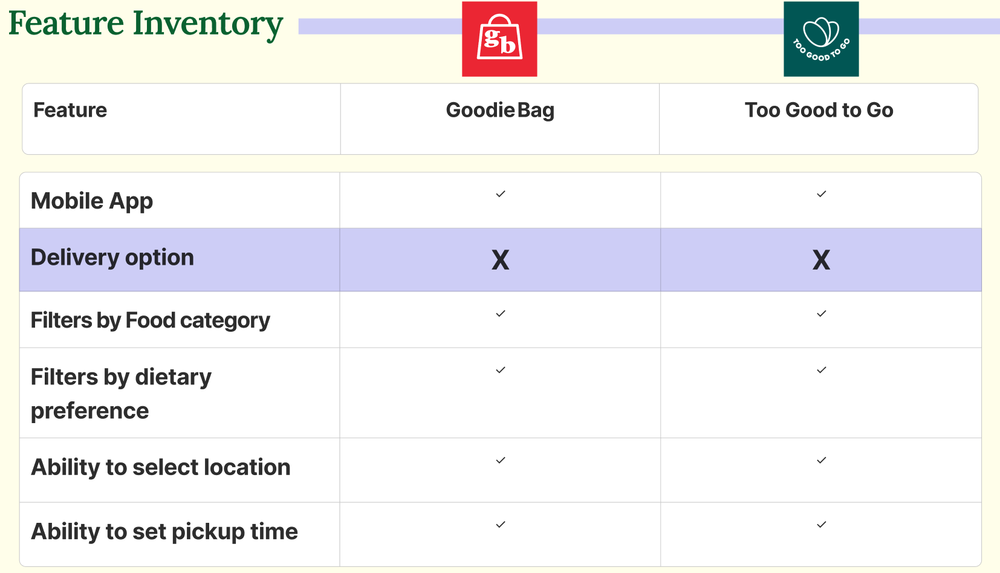
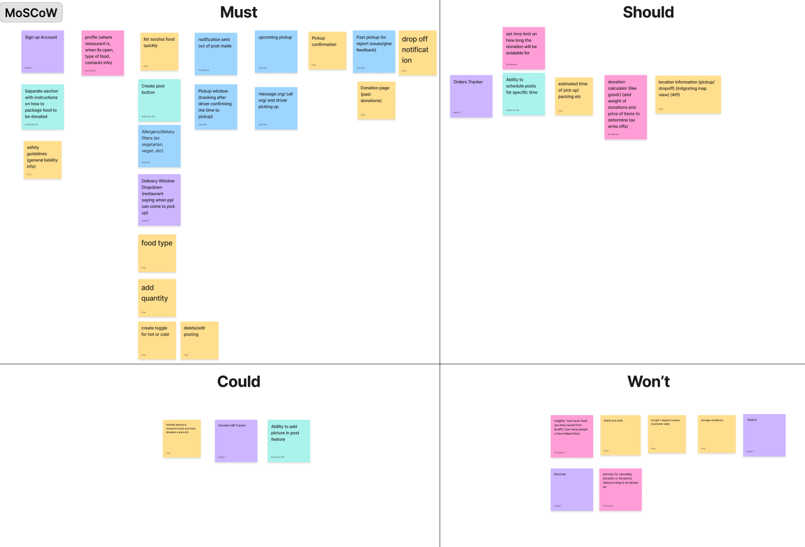

01 — Final Design
A glimpse of the platform.
Real-time listings, nearby discovery, and one-tap claim — designed to make food donation effortless during a busy closing rush.

Sneak Peek 1

Sneak Peek 2
Turning surplus food into meals — through real-time, last-minute redistribution.
Real-time listings, nearby discovery, and one-tap claim — designed to make food donation effortless during a busy closing rush.
Sneak Peek 1
Sneak Peek 2
Restaurants discard edible food every night while local organizations struggle to access consistent donations.
Surplus food has a narrow window — often 30–60 minutes before it must be discarded.
Restaurants worry about food safety liability — even though Good Samaritan laws protect them.
Staff are already exhausted at closing time. Any friction = no donation.
Existing solutions lack real-time coordination, simple logistics, and reliable delivery.

Wanted to understand the broader context of food waste and donation systems. Revealed the scale of food waste, key safety concerns, and gaps in redistribution processes.
Establishing a clear mission before design decisions ensured every feature tied back to real impact.
Prevent food waste by rescuing surplus food and delivering it to communities in need.
A world where no food is wasted and no community goes hungry.
Real-time, last-minute food redistribution — fast enough to catch food before it's discarded.
Separate surveys for restaurants and organizations. Stronger pain points on the restaurant side — drove us to focus the MVP on restaurant workflows.
2stakeholder groups surveyed
Uncovered three key barriers: time sensitivity, safety liability fears, and the complexity of the donation process during busy closing hours.
6restaurant staff interviewed
Analyzed Goodr, Too Good To Go, and similar platforms. Most lacked real-time coordination, simplicity, and reliable logistics support.


platforms analyzed


Katie runs a mid-size restaurant in New York. Every night at closing she faces the same problem — 30+ portions of unsold prepared food that will be thrown away. She wants to donate but doesn't have the time or system to make it happen consistently.

| Research Insight | Design Decision | Feature |
|---|---|---|
| Donations are highly time-sensitive | Real-time listing system with instant visibility | Live food listing feed |
| Donation process feels complex | Smart dropdowns + copy-paste previous listing | Quick post flow (<60 sec) |
| Restaurants fear liability | Good Samaritan info embedded in the posting flow | Safety guidelines card |
| Surplus patterns are repetitive | One-tap repost of yesterday's listing | Copy-paste feature |
| Logistics are a barrier | Uber Eats API integration for driver dispatch | Automatic delivery |
| Organizations need real-time updates | Push notifications + in-app messaging | Notification system |
Focused MVP on core actions: post, discover, claim, deliver.

Pre-populated fields and dropdown menus let staff post surplus food in under 60 seconds — even during a chaotic closing rush. One tap to copy yesterday's listing.

💡 Insight: Staff are time-constrained and donation feels like extra work. The copy-paste feature alone removed the biggest friction for repeat donors.
Organizations see available donations on a map and feed view with real-time updates. Filter by distance, food type, and quantity to claim the most relevant donations quickly.
💡 Insight: Organizations needed real-time awareness, not email updates that arrive too late to act on.
Real-time updates reassure restaurants that food will be collected — without requiring any staff coordination. Uber Eats integration handles driver dispatch and delivery tracking automatically.

💡 Insight: The moment restaurants had to manage driver coordination, donations stopped. Removing this step was essential.
Applied WCAG guidelines to ensure the app works for the diverse staff and volunteer base who interact with it.

All text meets AA contrast ratio. No reliance on color alone to convey meaning.

Clear hierarchy, minimum 16px body text, generous line height for readability.
All interactive elements minimum 44×44px for comfortable use under time pressure.
Minimal steps, clear labels, no dead ends — especially important for time-stressed users.
R1 on paper prototypes, R2 on mid-fi designs. Iterated to high-fidelity based on findings.

From opening app to listing live
Copy-paste for repeat donors
Uber Eats handles dispatch
With meaningful improvements between each
In time-sensitive scenarios, every extra step is an abandonment risk. Designing for the closing rush meant ruthlessly cutting anything non-essential.
The Uber Eats integration wasn't a tech decision — it was the UX decision that made donation feasible. Removing coordination from the user's responsibility changed everything.
Users want to do good. The only thing stopping them is friction. Reducing effort aligns design values with social values — making it effortless to be generous.
I focused testing on the restaurant side. With more time, I'd invest equally in testing with organizations — their experience is equally critical to the system working.
Deeper organization-side research, low-tech fallback for restaurants without smartphones, and impact dashboards showing meals served over time.
The copy-paste feature emerged from noticing that surplus patterns repeat daily. Always look for patterns in user behavior — they're design opportunities in disguise.
See the complete restaurant-to-organization flow — from posting to delivery — in the interactive Figma prototype.